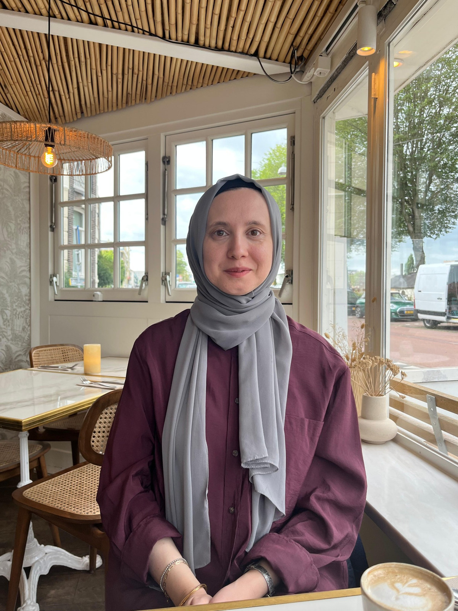

2025
Prolonged Guesthood: How Syrian Refugees Shaped Turkish Politics?
With E. Erbay · Economics & Politics, 37, 638–652
Economist · Istanbul University
I am an economist at Istanbul University. My research focuses on applied microeconomics, particularly migration, political economy, and the economics of education.
I study how refugee inflows shape voting behavior and public spending, and how education affects women’s empowerment and children’s development.
I received my PhD in Economics from the University of Bologna in 2020.

With E. Erbay · Economics & Politics, 37, 638–652
CESifo Economic Studies, 68(3), 219–252
Journal of Human Capital, 14(4), 535–585